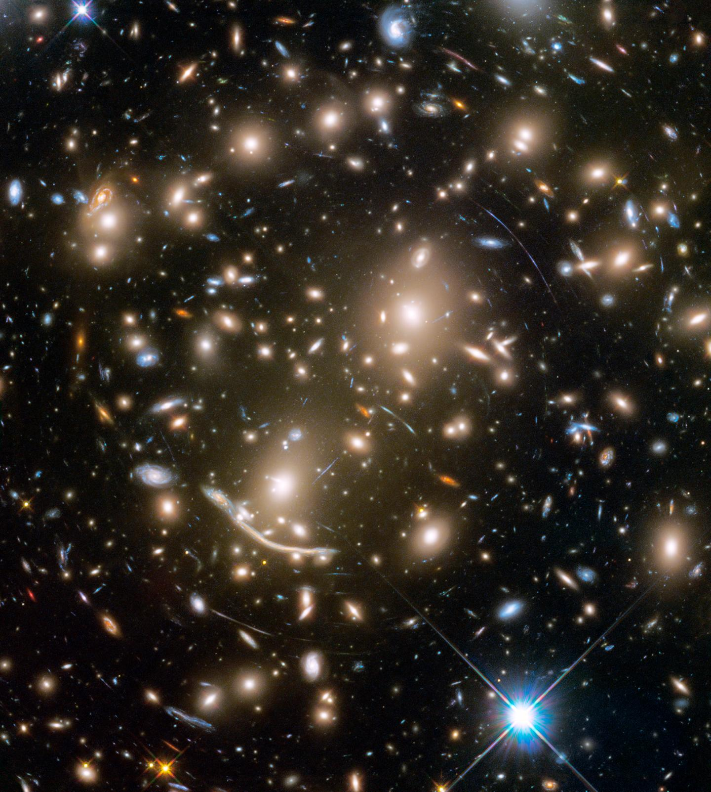
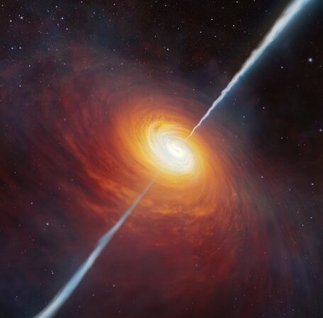

Protoclusters
Discovering and characterizing galaxy protoclusters at z = 5–10 using JWST, JCMT, and ALMA. Exploring their role in early large-scale structure formation and cosmic reionization.

Quasars
Studying quasar activity, mergers, and feedback processes during the Epoch of Reionization with multi-wavelength surveys such as JCMT, JWST, and VLA.

Lyα Nebulae
Exploring the circumgalactic medium and giant Lyα nebulae in overdense fields at z = 2–6 using IFU spectroscopy (Keck/KCWI, Palomar/CWI) and ALMA/NOEMA observations.